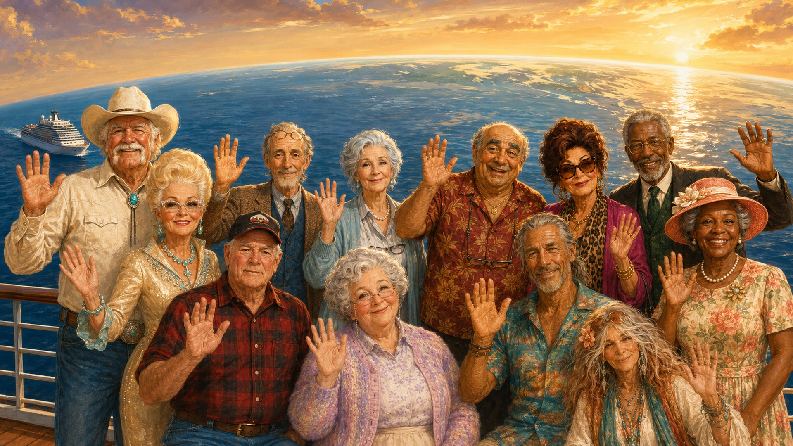

Вебзастосунки та SaaS
Платформи на замовлення, бізнес-застосунки, дашборди та масштабовані вебпродукти.
AI Design Engineer / Full-Stack веброзробник
Створюю вебзастосунки, системи автоматизації на базі AI та процеси для послідовного візуального контенту — поєднуючи програмну інженерію, креативну дирекцію і практичний бізнес-досвід.
Full-stack розробка, інтеграції з LLM, агентні процеси розробки та візуальний продакшн з допомогою AI.
Поєдную full-stack розробку, AI-інженерію та візуальний продакшн, щоб перетворювати ідеї на робочі продукти.
Платформи на замовлення, бізнес-застосунки, дашборди та масштабовані вебпродукти.
Процеси на базі AI, автономні агенти та інтеграції, що прибирають рутинну роботу.
Вбудовую мовні моделі в застосунки, бізнес-процеси та інтелектуальні інструменти.
Послідовні персонажі, ілюстровані сцени та відтворювані креативні процеси з допомогою AI.
Робочі платформи, нові продукти та креативні системи на базі AI — з фокусом на практичну цінність і продуману інженерію.
Платформа моніторингу торгових сигналів, що поєднує сканування ринку, перевірку сетапів і відстеження життєвого циклу сигналу в одному процесі — від входу до цілі чи стопу.
Відкрити платформу ↗Рекрутингова платформа, що спрощує публікацію вакансій і комунікацію між роботодавцями та кандидатами, з окремими кабінетами й автоматичними сповіщеннями.
Відкрити платформу ↗B2B-платформа для професійних комп’ютерних конфігурацій: архітектура бази даних, розробка застосунку й розгортання на сервері для структурованого підбору конфігурацій.
Відкрити платформу ↗Система ринкової аналітики з допомогою AI: автоматичний збір даних про товари, зіставлення однакових товарів і збагачення даних через LLM. Скорочує ручне порівняння неузгоджених каталогів.
Цифрова платформа сімейної спадщини та генеалогії: інтерактивні родинні дерева, складні зв’язки між поколіннями й доступ до спільних сімейних історій з урахуванням приватності.
Web3-концепт у сфері ClimateTech, що поєднує реальну висадку дерев із верифікованими цифровими сертифікатами. Проєкт досліджує, як блокчейн-записи можуть зробити екологічні ініціативи прозорішими.

Постійні персонажі, один цілісний візуальний світ.
Ілюстрований серіал, що триває: постійні персонажі, кінематографічні ілюстрації з допомогою AI, озвучені епізоди й короткий контент для різних платформ.
Зберегти впізнаваність персонажів і цілісність арт-дирекції в різних епізодах, локаціях, ракурсах, емоціях і часових періодах.
Створюю референс-аркуші персонажів, планую сцени за структурованими брифами, генерую ілюстрації з візуальними референсами й перевіряю кожен результат на послідовність і композицію.
Відтворюваний процес створення ілюстрацій для довгих історій у форматах 16:9 і 9:16 з єдиним стилем у всьому серіалі.
Відкритий до фриланс-проєктів і довгострокової співпраці. Розкажіть, що ви створюєте.